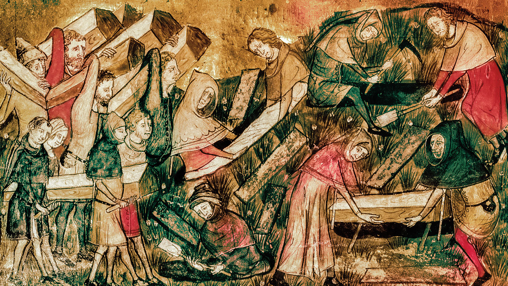
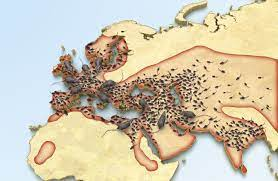
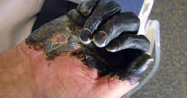

The Black Death, a pandemic that ravaged Europe between 1347 and 1351, taking a proportionately greater toll of life than any other known epidemic or war up to that time. The Black Death spread with fleas and would jump on rats would go on ships and infect the people on board and then when they got off the ship they would run around cites infecting people. The rats would spread around the world fast because people wouldn't clean their house and it would always be dirty on the roads or near their house.
 People around the cities of Europe and China started noticing that people would suddenly develop black spots over their body and they would develop fever, headache, chills, and weakness and one or more swollen, painful lymph nodes. They would try to fight back by drinking vinegar, eating crushed minerals, arsenic, and even mercury. They would sit close to a fire or in a sewer to drive out the fever, or fumigate the house with herbs to purify the air. Doctors would wear a big mask that covered their faces and it was shaped like a crow they would stuff lots of good smelling things in their makes to make sure they wouldn't get sick they would treat victims of the bubonic plague during epidemics.
When people started to notice that The Black Death was coming they would burn the house that had rats in them and would try to fight off the plague. They would also leave cities that had no hope of killing the rats or cleaning the waste all around the city.
Next Page Previous Page